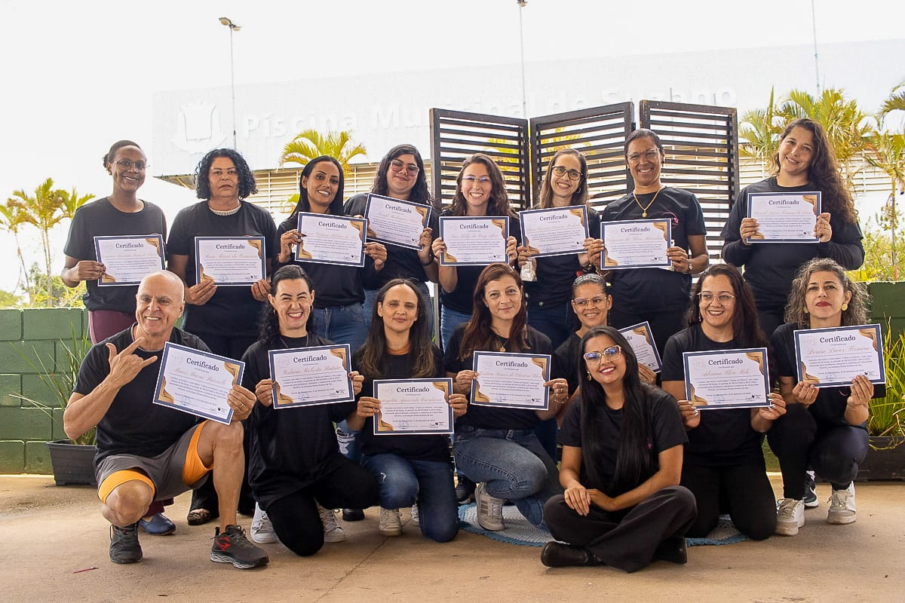
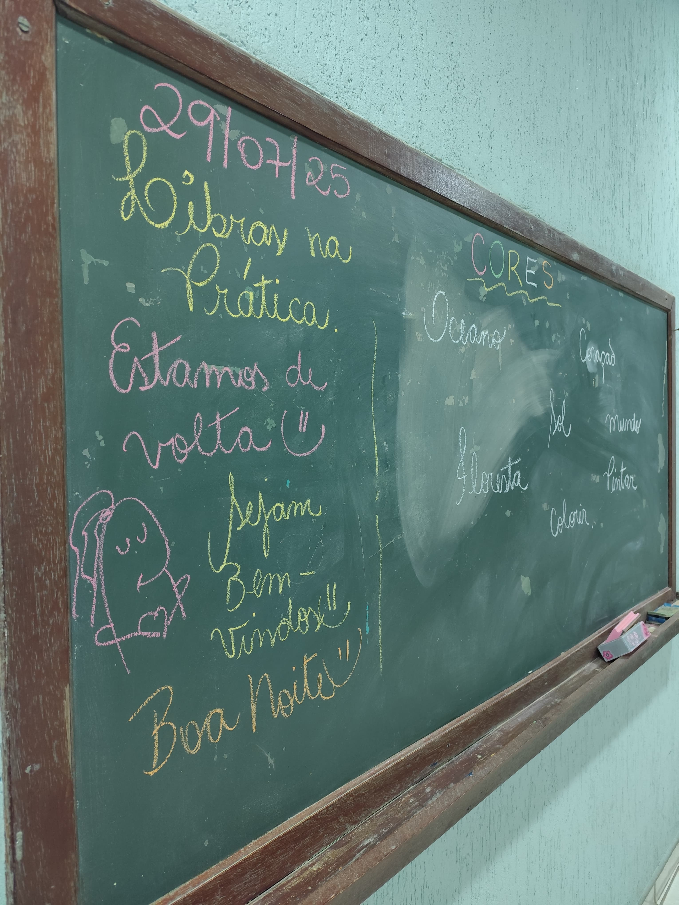
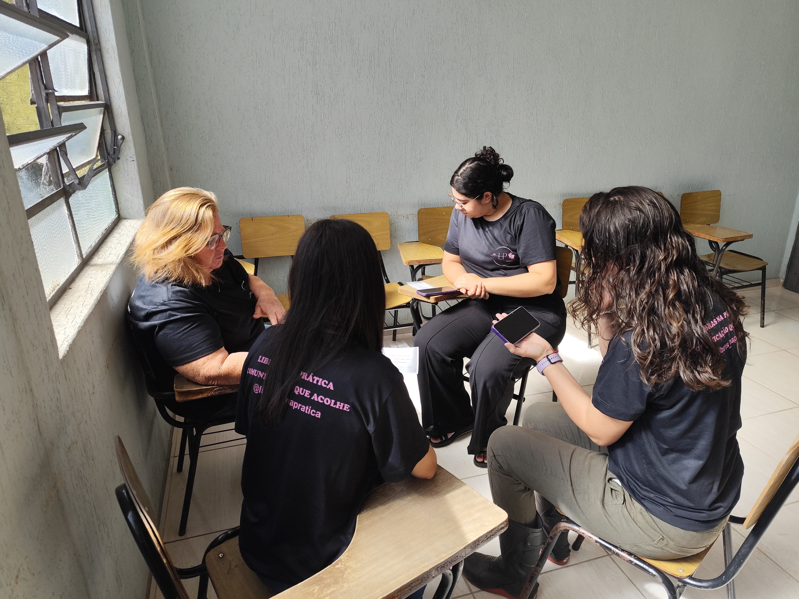
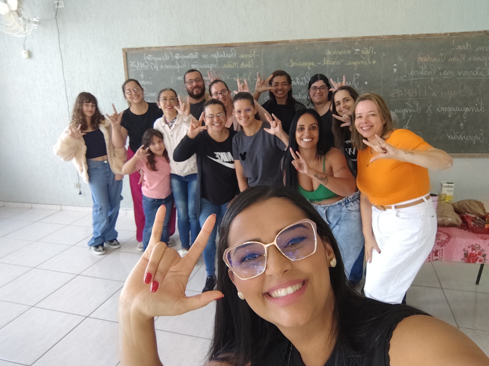
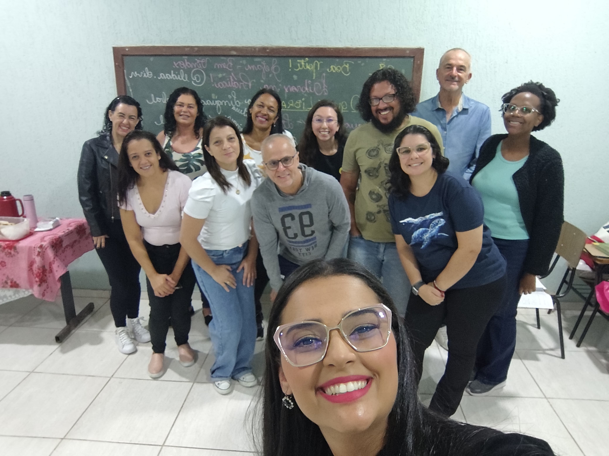

Reduzir barreiras de comunicação
O projeto aproxima comunidade, alunos e professores ao oferecer um caminho claro para estudar LIBRAS dentro e fora da sala de aula.
Um curso para aproximar pessoas ouvintes e não ouvintes, com aulas presenciais e uma plataforma para revisar conteúdos e acompanhar tarefas.

O curso Libras na Prática foi pensado para apoiar alunos da Pastoral dos Surdos e divulgar a Língua Brasileira de Sinais como ferramenta de inclusão, autonomia e convivência.
O projeto aproxima comunidade, alunos e professores ao oferecer um caminho claro para estudar LIBRAS dentro e fora da sala de aula.
Indicado para ouvintes, não ouvintes, voluntários e pessoas interessadas em inclusão social.
A professora conduz as aulas e usa a plataforma para disponibilizar materiais complementares.
Os alunos podem revisar sinais, fazer tarefas extras e avançar conforme o nível de aprendizado.
A plataforma existe para transformar a prática do curso em um processo contínuo, acessível e mais fácil de acompanhar.
brasileiros com deficiência auditiva precisam de ambientes mais preparados para acolher diferentes formas de comunicação.
Professora do curso Libras na Prática, tradutora e intérprete profissional de LIBRAS, com atuação também na rede pública de ensino.
A organização por nível ajuda o aluno a encontrar o conteúdo certo, revisar com autonomia e avançar com segurança.
Primeiros contatos com a língua, alfabeto manual, saudações e sinais do cotidiano.
Vocabulário temático e atividades para melhorar a fluidez na comunicação.
Aprofundamento para ampliar repertório e participação na comunidade.
O ambiente digital complementa as aulas presenciais sem substituir o contato humano: ele registra materiais, orienta a revisão e deixa o caminho de estudo mais claro.
Esta área pode receber fotos reais das aulas, da turma, dos eventos e das ações da Pastoral dos Surdos.
Acompanhar conteúdos


